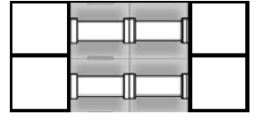

BZPRO
#4646. game
内存限制：512 MiB
时间限制：20 Sec
提交
提交记录
讨论
题目描述
有一个n*m的网格，除了最左边一列和最右边一列，每个格子上有一些
管道，需要通过旋转一些格子使得最右边一列上的一些格子能够通过管道与至
少一个最左边一列的格子连通。每个格子上的管道都是由一个中间管道扩展到
四个方向中的若干个，也就是说，这个格子的四个方向上如果有管道，那么这
些方向是联通的。例如上方、左方和右方有管道，那么这三个方向的格子如果
有朝向这个格子的管道，就可以通过这个格子上的管道连通。
比如这样：

问最右边一列的格子最多有几个同时与最左边一列的格子连通。
输入格式
多组数据。
对于每组数据，第一行有两个整数n和m，为网格图的行数和列数
下接N行，每行m-2个整数Xi,j，表示网格图第i行第j+l列的管道，如
果xi,j and l=1，那么向上有管道，如果Xi,j and 2=2，那么向右有管道，如
果xi,jand 4=4，那么向下有管道，如果Xi,j and 8=8，那么向左有管道。
l<=n<=9，3<=m<=20，数据组数在5以内
输出格式
若干行，每行一个数，表示一组数据的答案。
样例
样例输入
1 3
5
样例输出
1
//将中间的格子旋转成向左和向右连通即可。
数据范围与提示